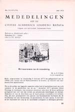
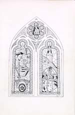
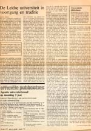

De verandering waargenomen
A.E. Cohen als historicus en universitair bestuurder
Tentoonstelling in de Universiteitsbibliotheek te Leiden, van 28 november 2003 tot en met 4 januari 2004.
Tentoongestelde stukken
9. Rector magnificus I: het waarnemen van de verandering
Nauwelijks had Cohen zijn hoogleraarschap aanvaard, of hij was al secretaris van de subfaculteit. Na enkele jaren steeg hij op de bestuurlijke ladder en was hij van 1968 tot 1971 decaan van de faculteit. Ook toen was het nog wel met het onderwijs en onderzoek te combineren. Als bestuurder lag het in de stijl van Cohen om ieder in zijn waarde te laten en de diversiteit van de universiteit te beklemtonen. Kernachtig in zijn taalgebruik, gebruikte hij bij wijze van spreken nooit drie woorden als hij het met twee afkon. Onmiddellijk tot de essentie van het probleem komen, het probleem zuiver stellen en er vervolgens zakelijk over debatteren – dat mag bij benadering wel het `geheim’ van Cohen genoemd worden. Ongetwijfeld is er van zijn rustige zelfverzekerdheid een heilzame invloed in die jaren uitgegaan. Nadat hij het rectoraat had bekleed van 1 september 1972 tot 1 september 1974, kwamen daar nog eens twee jaren bij. Groter lof was niet denkbaar, maar een derde termijn zou slopend zijn geweest.
|  | 9.1. `Het waarnemen van de verandering', Mededelingen
uit de civitas academica Lugduno Batava, nr. 3 (1972/73) 33-43
¶ Rede, uitgesproken op donderdag 8 februari 1973 ter gelegenheid van de 398ste dies natalis van de Rijksuniversiteit te Leiden. |
| 9.2. Bij het uitspreken van de rectorale rede op 8 februari 1973. [AEC] | |
| 9.3. Het senaatsdiner van dezelfde dag. [AEC]
¶ Links van mevrouw Cohen-Koster de heer Willem Fuhri Snethlage
uit Haarlem, bijzondere genodigde van de rector magnificus, degene
bij wie Cohen ondergedoken was van oktober 1942 tot de bevrijding. |
|
|  | 9.4. Menukaart van de diesviering van 8 februari 1973. Middenboven: Cohen als onderduiker. Links: Cohen op weg van Amsterdam naar Leiden. Rechts: Te midden van historische figuren. [AEC] |
| 9.5. Cohen steunend op het hoofd van zijn leermeester Huizinga. Tekening door Joop Walenkamp (1949-1997) [AHM] | |
| 9.6. K.J. Cath, voorzitter van het College van Bestuur. Tekening door Joop Walenkamp, uit: Portret van een Universiteit. Karikaturen door Joop Walenkamp met tekst van Gerard Schelvis (Den Haag : Drukkerij Klaverblad, 1978) [AHM] | |
| 9.7. De Lex-Veringa tussen verleden en
toekomst. A.E. Cohen, decaan van de faculteit der letteren, 8
december 1970 [AEC].
¶ Citaat: De afstand die ons thans van de onrustige maanden mei-juni 1969 scheidt, maakt het mogelijk, die gebeurtenissen te zien in het perspectief van de voorafgegane ontwikkeling. Dus niet als een plotselinge bevrijding of een onverwachte catastrofe, zoals menigeen ze op het moment zelf ervoer, maar als een tijdelijke stroomversnelling in een continue ontwikkeling. |
|
|  | 9.8. `De Leidse universiteit
in voortgang en traditie', Acta et agenda, nr. 7-37 (29 mei
1975), 798, 804.
¶ Rede uitgesproken als rector magnificus tijdens de Academische Zitting op woensdag 21 mei 1975 ter gelegenheid van het vierhonderdjarig bestaan van de universiteit. Cohen zelf beschouwt deze voordracht `als een van de beste dingen die ik gedaan heb’.
|
 |
9.9. Afscheidscollege, 9 februari 1976. [AHM]
¶ Op de eerste rij van rechts naar links: D.J. Kuenen, mw. H. Cohen-Koster, mw. L. Kuenen, R.S.P. Beeke , D.J. Roorda, H.P.H. Jansen.
|
| vorige pagina | volgende pagina |